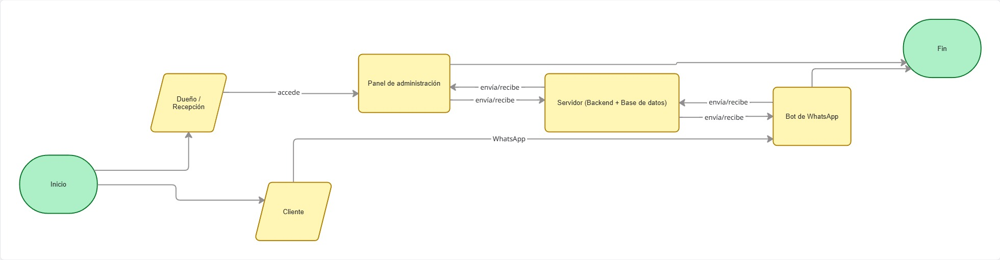
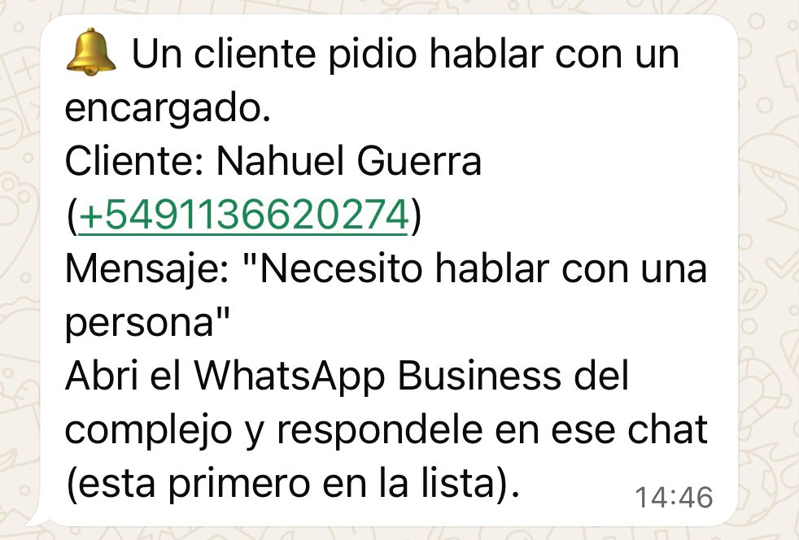
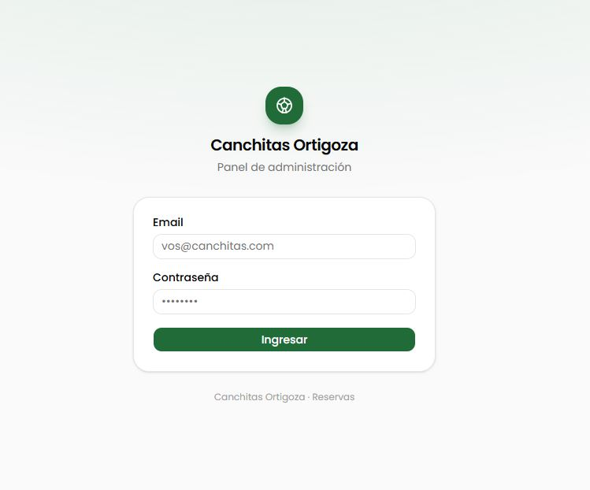
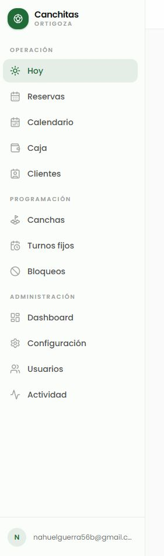
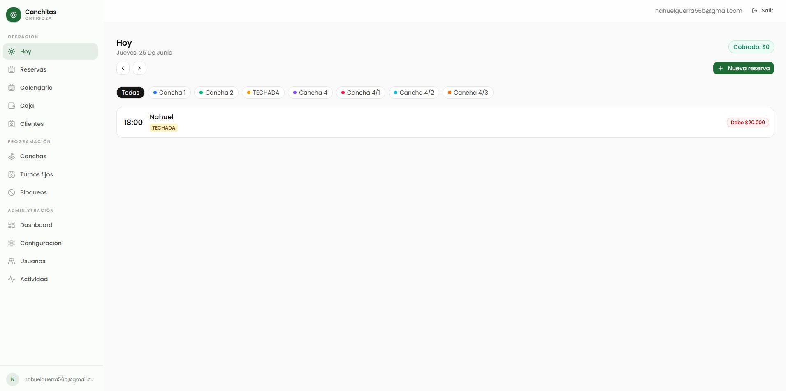
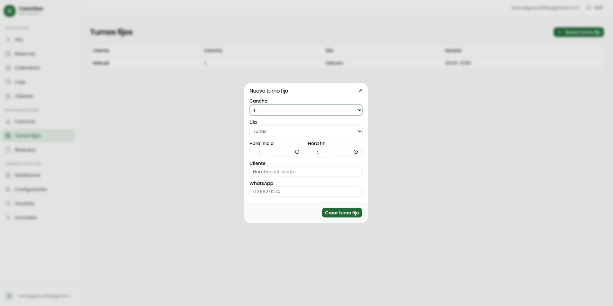
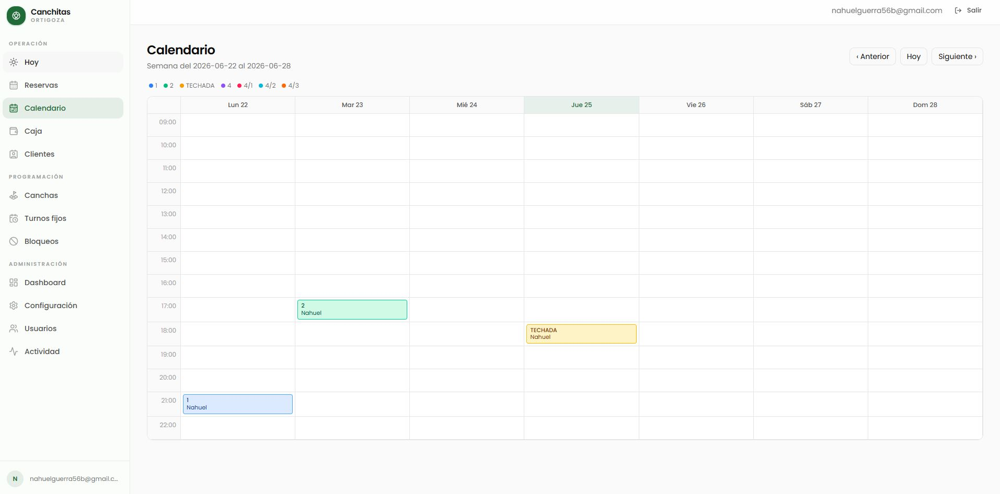

Es un sistema que automatiza la gestión de turnos del complejo. Antes todo se anotaba a mano (en un Excel) y había que responder cada mensaje de WhatsApp. Ahora hay tres piezas que trabajan juntas:
Es un asistente automático que atiende a los clientes por WhatsApp las 24 horas. Reserva turnos, cobra la seña, cancela, reprograma y responde preguntas. Si no puede resolver algo, avisa a una persona. Funciona en un número de WhatsApp dedicado del complejo (no el personal del dueño).
Es la página web donde ustedes (dueño y recepción) ven y manejan todo: la agenda del día, los cobros, las reservas, los turnos fijos, los precios, etc. Es lo que reemplaza al Excel.
Es la computadora del complejo donde vive toda la información (reservas, clientes, pagos) y donde están las reglas del negocio (que no se superpongan dos turnos, los precios, la seña). El bot y el panel le piden y le guardan datos a este servidor.

El cliente le escribe al número del complejo como si hablara con una persona. El bot entiende lenguaje natural (incluso audios) y resuelve solo la mayoría de los casos.
| El cliente quiere… | Qué hace el bot |
|---|---|
| Reservar un turno | Pregunta para cuántos jugadores (cancha de 5, 7, 9 u 11), el día y la hora; muestra los horarios libres y las canchas disponibles, y confirma la reserva. |
| Saber el precio | Responde el precio por hora de cada cancha. |
| Pagar la seña | Le pasa el alias/CBU, recibe la foto del comprobante y la verifica automáticamente para confirmar el turno. |
| Cancelar | Cancela el turno (si está dentro del plazo permitido). |
| Reprogramar | Mueve el turno a otro día/hora, o le cambia la cancha. |
| Ver sus turnos | Le lista sus reservas y sus turnos fijos (los que tiene todas las semanas). |
| Hablar con una persona | Avisa al encargado y se hace a un lado para no interferir. |
| Preguntar ubicación, pagos, servicios | Responde con los datos del complejo (mapa, formas de pago, buffet, etc.). |
Para evitar turnos que después no se usan, el bot pide una seña por transferencia. El cliente manda la foto del comprobante y el bot la lee y verifica el monto y el destino automáticamente. Si todo coincide, el turno queda Confirmado; si no, queda pendiente y avisa a un encargado para que lo revise.
Si el cliente pide hablar con alguien, o el bot no entiende un caso especial, el bot le manda un aviso al encargado por WhatsApp Business con el nombre, el número y el mensaje del cliente. A partir de ahí el bot se queda callado en ese chat por un rato, para que la persona pueda responder sin que el bot interfiera. La conversación sigue en el mismo chat de siempre.


| Rol | Qué ve y puede hacer |
|---|---|
| Administrador (dueño) | Ve todo: además de la operación, puede tocar canchas, precios, configuración, usuarios y los reportes. |
| Recepcionista | Ve lo necesario para el día a día: Hoy, Reservas, Calendario, Caja, Clientes y Turnos fijos. No toca configuración ni precios. |
El menú está agrupado en tres bloques para que sea fácil de encontrar:
| Bloque | Secciones | Para qué |
|---|---|---|
| Operación | Hoy · Reservas · Calendario · Caja · Clientes | El día a día del mostrador. |
| Programación | Canchas · Turnos fijos · Bloqueos | Cómo está armada la grilla de turnos. |
| Administración | Dashboard · Configuración · Usuarios · Actividad | Gestión y control (solo administrador). |

Es la pantalla de recepción. Muestra todos los turnos del día (reservas, turnos fijos y bloqueos) ordenados por hora, cada uno con la cancha en un color distinto (el mismo del calendario) y un cartelito de pago:
Pagado Espera seña

Sirve cuando alguien reserva en persona o por teléfono.
Un turno fijo es el cliente que viene todas las semanas el mismo día y hora (por ejemplo, "los sábados a las 20:00"). Se cargan en la sección Turnos fijos.
Si un cliente fijo no va a venir una semana puntual, se puede liberar esa fecha (el cliente incluso puede hacerlo solo, escribiéndole al bot). El turno fijo sigue vigente para las demás semanas.

Un bloqueo cierra una cancha en un horario para que nadie pueda reservarla: por un torneo, mantenimiento, un entrenamiento, etc. Se cargan en Bloqueos y pueden ser para una fecha puntual o repetirse todas las semanas.
Muestra la semana completa con todas las canchas y turnos, cada cancha en su color. Sirve para ver de un vistazo cómo viene la semana y encontrar huecos.

Reúne los movimientos de plata (los cobros). Sirve para hacer el cierre y ver cuánto entró por efectivo y por transferencia.
El listado de clientes con sus datos y su historial. Acá se ve quién es cliente de confianza (al que el bot no le pide seña).
| Sección | Para qué sirve |
|---|---|
| Canchas | Alta/edición de las canchas: nombre, tamaño (5/7/9/11) y precio por hora. |
| Configuración | Datos de la seña (alias, CBU, titular, monto/porcentaje), horarios de apertura y cierre, y el número de WhatsApp del encargado para los avisos. |
| Usuarios | Dar de alta a los recepcionistas (con su correo y contraseña) y darlos de baja. |
| Dashboard | Resumen con métricas: ocupación, ingresos, etc. |
| Actividad | Registro de "quién hizo qué" (auditoría): útil para controlar el equipo. |
No hace falta que toquen nada del servidor en el día a día, pero conviene saber qué es, para entender el sistema y para hablar con el soporte si algo pasa.
| Síntoma | Qué revisar / hacer |
|---|---|
| El bot no responde a los clientes | 1) Verificar que el servidor esté encendido y con internet. 2) Verificar que el número de WhatsApp del bot esté conectado. 3) Si sigue, avisar al soporte técnico. |
| El panel no abre o da error | Probar refrescar la página (F5). Si no, verificar internet. Si sigue, avisar al soporte. |
| Un cliente dice que pagó la seña pero el turno no se confirmó | El bot avisa al encargado cuando no puede verificar un comprobante. Revisá el turno en el panel y confirmá/cobrá a mano si corresponde. |
| El bot quedó "callado" con un cliente | Es porque alguien pidió hablar con una persona. Respondé desde el WhatsApp Business. El bot vuelve a tomar la conversación solo después de un rato. |
| Se cortó la luz | Cuando vuelve, el sistema se reinicia solo. El bot responde los mensajes pendientes apenas vuelve. |
| Palabra | Qué significa |
|---|---|
| Bot | El asistente automático que atiende a los clientes por WhatsApp. |
| Panel | La página web donde ustedes gestionan el complejo. |
| Servidor | La computadora donde vive la información y corren las reglas del sistema. |
| Reserva | Un turno puntual para una fecha y hora. |
| Turno fijo | Un cliente que viene todas las semanas el mismo día y hora. |
| Bloqueo | Cerrar una cancha en un horario para que no se pueda reservar (torneo, mantenimiento, etc.). |
| Seña | El adelanto por transferencia que se pide para confirmar un turno. |
| Reprogramar | Mover un turno a otro día u hora. |
| Cliente de confianza | Cliente al que el bot le confirma el turno sin pedir seña. |
| Derivar a un humano | Cuando el bot pasa la conversación a una persona y se hace a un lado. |
| Rol | El tipo de usuario del panel: administrador (ve todo) o recepcionista (lo del día a día). |